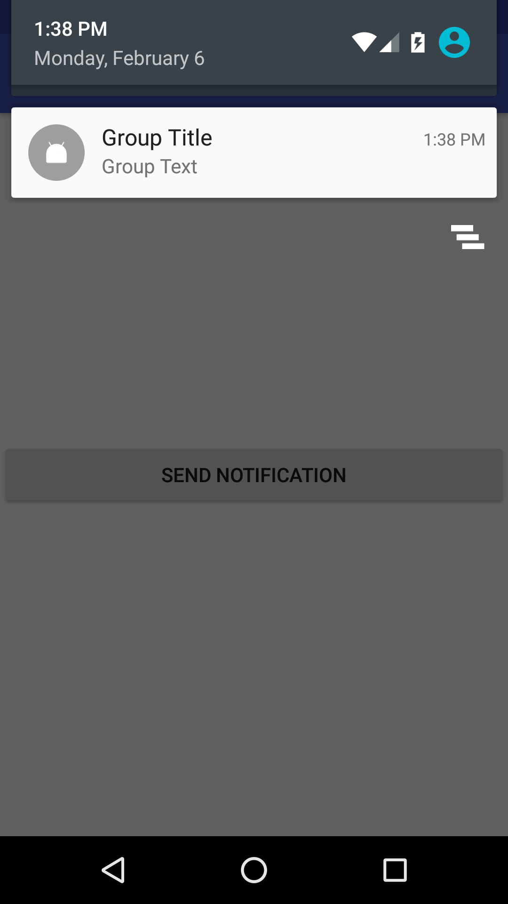

[Android] Notifications Overview and Pitfalls
Introduction⌗
Notifications are widely used in Android applications. Though API is pretty straightforward, there are some key things that one should know and understand. This article will try to be first step into understanding Notifications API.
Sending Single Notification⌗
Notification singleNotification = new NotificationCompat.Builder(this)
.setContentTitle("Title")
.setContentText("Text")
.setSmallIcon(R.drawable.ic_notification)
.build();
NotificationManagerCompat notificationManager = NotificationManagerCompat.*from*(context);
notificationManager.notify(notificationId, singleNotification);

Key things here:
-
We use NotificationCompat.Builder to have single interface for creating notifications and let Support Library do all compatibility tricks;
-
Content title, context text and small icon are **required **to show notification;
-
To show notification we should use NotificationManagerCompat (NotificationManagerCompat.from(context)) instead of system NotificationManager (context.getSystemService(NOTIFICATION_SERVICE)) — for compatibility;
-
Each notification should have notificationId. To send **new **notification to the system notificationId should be unique.
Updating Single Notification⌗
To update notification (that is already showing — active) one should just send new notification with the same id. Old notification will be replaced with new one.
Handling clicks on notification⌗
To handle clicking on notification one should set content intent.
Intent intent = new Intent(context, Activity.class);
intent.putExtra(...); // add some extras here
PendingIntent pendingIntent = PendingIntent.getActivity(context, requestCode, intent, flags);
builder.setContentIntent(pendingIntent);
Key things here:
-
PendingIntent is a special “token” (reference to Intent). It can be retrieved from static methods such asPendingIntent#getActivity, PendingIntent#getBroadcast, PendingIntent#getService etc. to start activity or service or send broadcast;
-
requestCode is some kind of id of PendingIntent (so it doesn’t have same sense as requestCode in #startActivityForResult) — one can use it to distinguish two PendingIntents that should be different;
-
intent is an Intent to be sent on clicking notification;
-
PendingIntents are references to tokens which describe data used to retrieve this PendingIntent. This means that retrieving PendingIntent with the same data will return reference to **the same token **(see example below);
-
flags affect lifecycle of PendingIntent tokens. Full list of flags one can see in official documentation. For example, PendingIntent.FLAG_UPDATE_CURRENT flag means that if pending intent with given configuration doesn’t exist in the system — it will be created. Otherwise, it will be overwritten by new one.
-
Adding different extras to original intent will return the same PendingIntent. Different PendingIntents will be created for original intents for which Intents.filterEquals returns false. Also different PendingIntents will be created for different requestCodes.
Example to illustrate common mistake with PendingIntents lifecycle and updating. Consider we have MainActivity that prints text from intent extra with key “KEY_TEXT”. And we send notifications like following:
public void sendNotification(int notificationId, int requestCode, String text) {
Intent intent = new Intent(context, MainActivity);
intent.putExtra("KEY_TEXT", text);
PendingIntent pendingIntent = getActivity(context, requestCode, intent, FLAG_UPDATE_CURRENT);
Notification notification = ... // create notification as shown above
.setContentIntent(pendingIntent);
notificationManager.notify(notificationId, pendingIntent);
}
And let’s send two notifications:
sendNotification(1, 0, "Text 1");
sendNotification(2, 0, "Text 2");
As a result clicking on any of the notification will end up with opening MainActivity and showing “Text 2”. Why? Because request codes for PendingIntents are the same, and FLAG_UPDATE_CURRENT updated PendingIntent when new notification is sent. So, both notifications have the same PendingIntent (with latest original Intent posted) even considering the fact that extras in intents were different.
One way to avoid this is to use different request codes (e.g. use notificationId as request code).
Another way is to set different actions, e.g. like this:
intent.setAction(Long.toString(System.currentTimeMillis()))
Handling dismissing notification⌗
Handling dismissing notification is the same as handling clicking notifications. But different method in builder is used:
builder.setDeleteIntent(pendingIntent);
Delete intent will be sent when user manually dismisses notification or when user clicks on “Clear all notifications” button in notification tray.
Clicking on notification itself dismisses notification, but delete intent will not be sent in this case. Instead content intent will be sent.
Notifications grouping⌗
Each notification can be assigned to a group with some GROUP_KEY.
builder.setGroup(GROUP_KEY);
Specifying group on some notification does nothing, but only marks that notification now is a part of a group. If you mark two notifications with the same group, these notifications will **not **be grouped automatically.
There is special notification called “Summary notification”. To make notification “Summary notification” one should call:
builder.setGroup(GROUP_KEY);
builder.setGroupSummary(true);
In this case following will happen:
- On phone only Summary notification will be shown. Any other non-summary notification with the same group key as Summary notification will not be shown

- On wearable device Summary notification will not be shown. Instead all non-summary notifications will be shown (grouped automatically by the system).


Accessing notifications in notification tray⌗
In order to update notifications it is useful to access currently showing notifications. For example, if we have Summary notification then we might want to show number of notifications in this group. To do this we should know how many notifications of this group is showing at the moment.
Unfortunately, there is no way to do that prior to API 23. Since API 23 there is method:
if (Build.VERSION.SDK_INT >= Build.VERSION_CODES.M) {
NotificationManager notificationManager = context.getSystemService(NOTIFICATION_MANAGER);
StatusBarNotification[] notifications = notificationManager.getActiveNotifications();
}
Important: here we need NotificationManager and not NotificationManagerCompat.
Note: When only summary notification is currently visible to user in notification tray, getActiveNotifications returns whole list of notifications (including ones that grouped in summary and not visible on phone in notification tray).
Important: Don’t use emulators (neither Android official emulator nor Genymotion) for implementing notifications grouping, as in the case described aboveNotificationManager#getActiveNotifications() returns only summary notification and doesn’t list notifications that were sent, but currently not visible to user..
Notification Styles⌗
Here the best thing one can do is look at available Styles in documentation. Knowing available styles is important to find one that fits your needs. For example, for grouping notifications InboxStyle is very useful. We will use it below.
Example of grouping notifications⌗
Collecting everything above, we finally can do something useful.
Snippet below does the following:
- If no notifications in notification tray: send single notification
- If only one notification is shown in notification tray: send single notification and group notifications into summary notification (with previews of current notifications)
- If summary notification is showing: send single notification and update group notification
Call sendNotification multiple times with the same group key, and see what happens.
private void sendNotification(Context context, String groupKey, String message) {
NotificationManager notificationManager = (NotificationManager) getSystemService(*NOTIFICATION_SERVICE*);
boolean shouldShowGroupNotification = false;
List<CharSequence> currentNotificationMessages = new ArrayList<>();
currentNotificationMessages.add(message);
if (Build.VERSION.*SDK_INT *>= Build.VERSION_CODES.*M*) {
for (StatusBarNotification sbn : notificationManager.getActiveNotifications()) {
if (sbn.getId() != *GROUP_ID *&& groupKey.equalsIgnoreCase(sbn.getNotification().getGroup())) {
CharSequence text = sbn.getNotification().extras.getCharSequence(*EXTRA_TEXT*);
currentNotificationMessages.add(text);
shouldShowGroupNotification = true;
break;
}
}
}
showSingleNotification(context, groupKey, message);
if (shouldShowGroupNotification) {
showGroupNotification(context, groupKey, currentNotificationMessages);
}
}
private void showSingleNotification(Context context, String groupKey, String message) {
int notificationId = (int) (System.*currentTimeMillis*() / 1000);
Intent intent = new Intent(this, MainActivity.class);
PendingIntent pendingIntent = PendingIntent.*getActivity*(context, notificationId, intent, PendingIntent.*FLAG_UPDATE_CURRENT*);
Notification singleNotification = new NotificationCompat.Builder(context)
.setContentTitle("Title")
.setContentText(message)
.setGroup(groupKey)
.setSmallIcon(R.drawable.ic_notification)
.setContentIntent(pendingIntent)
.build();
NotificationManagerCompat notificationManager = NotificationManagerCompat.*from*(context);
notificationManager.notify(notificationId, singleNotification);
}
private void showGroupNotification(Context context, String groupKey, List<CharSequence> previousNotificationsTexts) {
NotificationCompat.InboxStyle style = new NotificationCompat.InboxStyle();
for (CharSequence text: previousNotificationsTexts) {
style.addLine(text);
}
int groupCount = previousNotificationsTexts.size() + 1;
style.setSummaryText(groupCount + " new notifications");
Notification groupNotification = new NotificationCompat.Builder(context)
.setStyle(style)
.setContentTitle("Group Title")
.setContentText("Group Text")
.setSmallIcon(R.drawable.ic_notification)
.setGroup(groupKey)
.setGroupSummary(true)
.build();
NotificationManagerCompat notificationManager = NotificationManagerCompat.*from*(context);
notificationManager.notify(*GROUP_ID*, groupNotification);
}


Further improvements⌗
Things that are not covered here is updating group notification on clicking on notification or on dismissing notification. But this is like a union of “Handle clicking/dismissing notification” with “Update (summary) notification”. Consider this as a homework :)
References/Further reading⌗
Notifications | Android Developers *A notification is a message you can display to the user outside of your application's normal UI. When you tell the…*developer.android.com Notifying the User | Android Developers *A notification is a user interface element that you display outside your app's normal UI to indicate that an event…*developer.android.com Adding Wearable Features to Notifications | Android Developers *When an Android handheld (phone or tablet) and Android wearable are connected, the handheld automatically shares…*developer.android.com